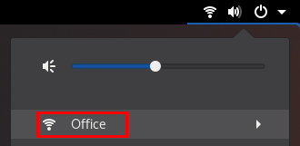

Connecting to a wifi network by using GNOME Settings
-
A wifi device is installed on the host.
-
The wifi device is enabled. To verify, use the
nmcli radiocommand.
You can use the GNOME Settings application, also named gnome-control-center, to connect to a wifi network and configure the connection. When you connect to the network for the first time, GNOME creates a NetworkManager connection profile for it.
In GNOME Settings, you can configure wifi connections for all wifi network security types that RHEL supports.
-
Open the system menu on the right side of the top bar, and verify that the wifi network is connected:

If the network appears in the list, it is connected.
-
Ping a hostname or IP address:
# ping -c 3 example.com